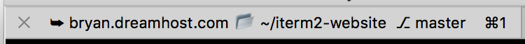

George’s Title Algorithm¶
This code combines user-defined variables from Shell Integration with a custom session title function. It demonstrates iterm2.registration.TitleProviderRPC(). The end result is a snazzy title that includes your git branch:


First, you need to install Shell Integration. Add this to your .bashrc:
function iterm2_print_user_vars() {
iterm2_set_user_var gitBranch $((git branch 2> /dev/null) | grep \* | cut -c3-)
iterm2_set_user_var home $(echo -n "$HOME")
}
Next, install this script in ~/Library/Application Support/iTerm2/Scripts/AutoLaunch:
#!/usr/bin/env python3
import asyncio
import iterm2
import os
import subprocess
import sys
def hostname_dash_f():
process = subprocess.Popen(["hostname", "-f"], stdout=subprocess.PIPE)
(output, err) = process.communicate()
exit_code = process.wait()
return output.decode('utf-8').rstrip()
def shortened_hostname(h):
i = h.find(".")
if i < 0:
return h
else:
return h[:i]
def make_title(auto_name, profile_name):
if auto_name != profile_name:
return auto_name
else:
return ""
def make_hostname(hostname, localhost):
if not hostname:
return ""
short_hostname = shortened_hostname(hostname)
if short_hostname and short_hostname != localhost:
return "➥ " + short_hostname
return ""
def make_pwd(user_home, localhome, pwd):
if pwd:
if user_home:
home = user_home
else:
home = localhome
home_prefix = "📂 "
if pwd == home:
home_prefix = ""
pwd = "🏡"
elif pwd.startswith(home):
pwd = "~" + pwd[len(home):]
if pwd:
return home_prefix + pwd
return ""
def make_branch(branch):
if branch:
return " ⎇ " + branch.rstrip()
return ""
async def main(connection):
localhome = os.environ.get("HOME")
localhost = hostname_dash_f()
@iterm2.TitleProviderRPC
async def georges_title(
pwd=iterm2.Reference("path?"),
hostname=iterm2.Reference("hostname?"),
branch=iterm2.Reference("user.gitBranch?"),
auto_name=iterm2.Reference("autoName?"),
profile_name=iterm2.Reference("profileName?"),
tmux_title=iterm2.Reference("tmuxWindowTitle?"),
user_home=iterm2.Reference("user.home?")):
if tmux_title:
return tmux_title
parts = [make_title(auto_name, profile_name),
make_hostname(hostname, localhost),
make_pwd(user_home, localhome, pwd),
make_branch(branch)]
return " ".join(list(filter(lambda x: x, parts)))
await georges_title.async_register(
connection,
display_name="George's Title Algorithm",
unique_identifier="com.iterm2.example.georges-title-algorithm")
iterm2.run_forever(main)
Then either restart iTerm2 or launch the script from Scripts > AutoLaunch > georges_title.
Finally, select George’s Title Algorithm in Prefs > Profiles > General > Title.